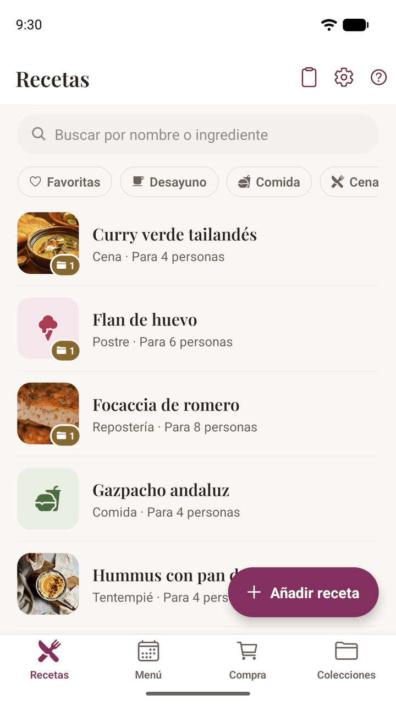
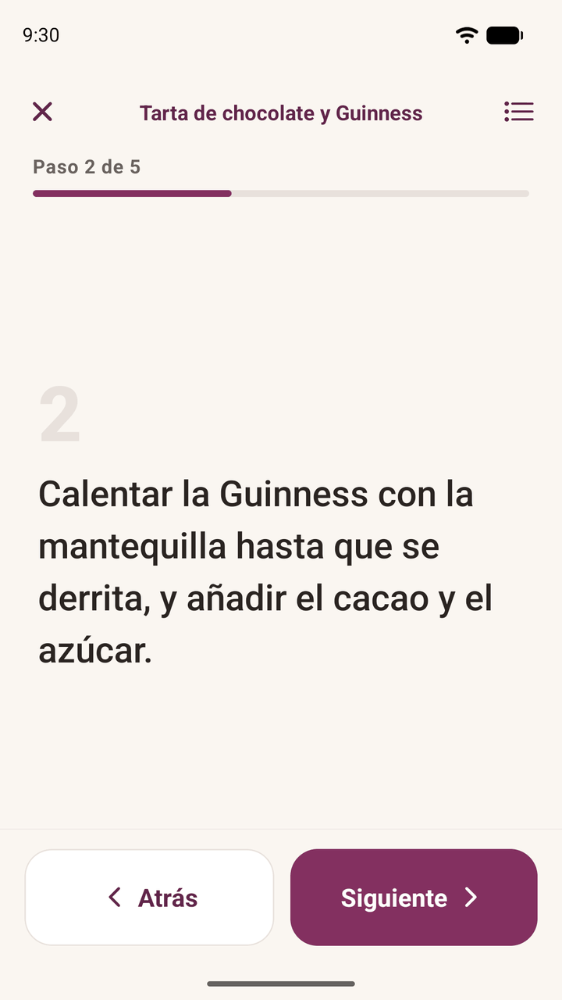
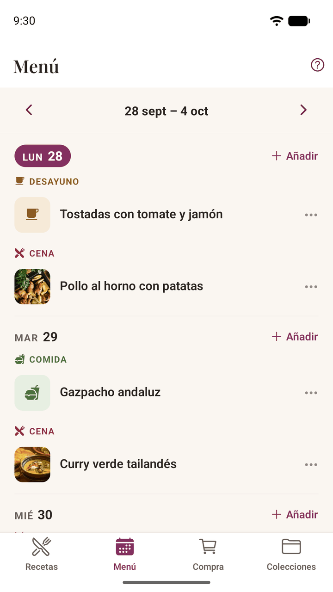
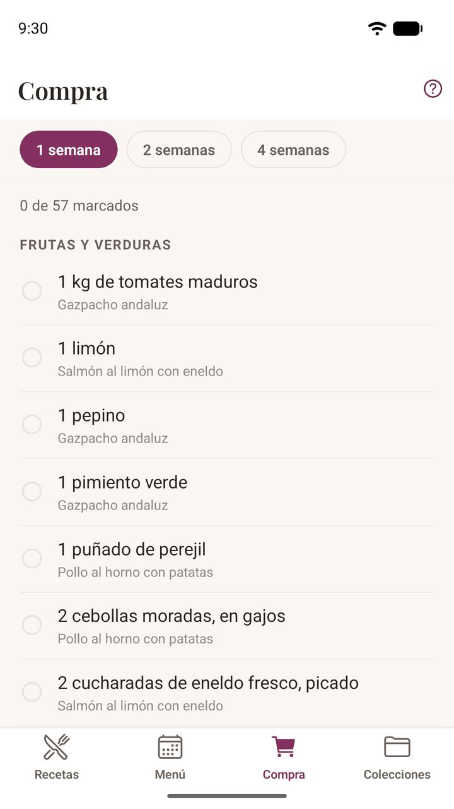
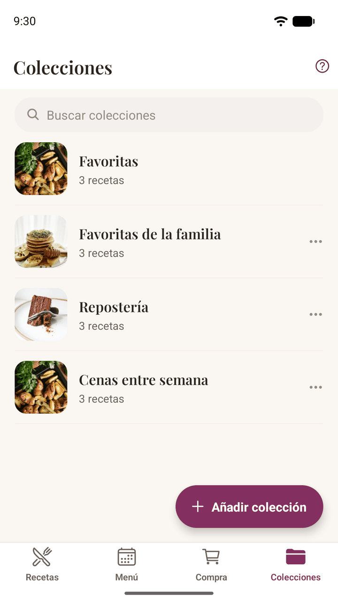

Añadir recetas

Importar desde una web o una red social
Lo más rápido es enviar la receta a Damson Kitchen desde donde la hayas encontrado. En el navegador, en Instagram o en tu aplicación de notas, toca Compartir y elige Damson Kitchen. La aplicación lee la página y rellena el título, los ingredientes y la preparación para que los revises antes de guardar.
También puedes tocar el icono del portapapeles en la parte superior de Recetas, que abre un recuadro donde pegar directamente un enlace o el texto de la receta.
Dos cosas que conviene saber:
- Échale siempre un vistazo antes de guardar. Las páginas de recetas son muy distintas entre sí, y la aplicación es prudente a propósito: prefiere dejar algo como ingrediente antes que equivocarse y hacerlo desaparecer sin avisar.
- Las recetas importadas nunca traen foto. Es a propósito: la foto de la web de otra persona pertenece a quien la hizo. A cambio tienes un enlace a la receta original, y puedes añadir tu propia foto cuando quieras.
Escanear una receta de una foto
Muchas de las recetas que más merece la pena guardar no tienen ningún enlace: la página de un libro de cocina que tienes, una ficha escrita a mano, una foto que te ha mandado alguien de la familia. Toca el icono del portapapeles en Recetas, después Escanear de una foto, y haz una foto o elige una imagen que ya tengas guardada.
El texto se lee en tu teléfono. No se sube nada y ninguna foto de tu receta sale del dispositivo; precisamente por eso lee peor la letra a mano que un servicio que enviara tus fotos a otro sitio.
- Las páginas impresas se leen bien; la letra ligada, a menudo no. Si un escaneo sale sin sentido, suele ser por eso. Escribirla es más rápido que pelearse con ella.
- Las recetas de dos páginas no son problema. Al volver a escanear, el texto se añade a lo que ya hay en el recuadro en lugar de sustituirlo, así que puedes hacer una página tras otra.
- Revisa las cantidades antes de importar. Esto es lo más importante. Al escanear se puede leer mal una cantidad de una forma que parece perfectamente razonable, no claramente errónea, y una cantidad equivocada se ajustaría mal cada vez que cocinases la receta. El texto siempre llega primero al recuadro para que lo revises: esa revisión es el objetivo, no una formalidad.
Escribir una receta directamente
El mismo recuadro admite una receta escrita desde cero, que a mucha gente le resulta más natural que rellenar un formulario. Escríbela como lo harías en papel (el título, luego los ingredientes y después la preparación) y toca Importar receta. Damson Kitchen pone cada cosa en su sitio.
En ese recuadro hay dos cosas que ayudan a hacerlo bien:
- Comprobar ingredientes y preparación añade los títulos INGREDIENTES y PREPARACIÓN donde cree que se divide la receta (o INGREDIENTS y METHOD si la receta está en inglés). No son decoración: esas palabras son exactamente lo que lee la aplicación al importar, así que, si un título está en el sitio equivocado, al moverlo se mueve la división. Vuelve a pulsar el botón después de un cambio y los títulos se moverán para ajustarse.
- Las flechas arriba y abajo mueven la línea en la que está el cursor, lo que te ahorra seleccionar, cortar y pegar para desplazar una línea: útil para un título que ha quedado una línea demasiado arriba o un ingrediente que ha acabado entre los pasos.
Crear la tuya
Toca Añadir receta y rellena tanto o tan poco como quieras: solo el título es obligatorio.
- Los ingredientes se escriben como los dirías: «200 g de harina», «2 huevos grandes», «unas ramitas de tomillo». Por debajo, la aplicación entiende la cantidad para poder ajustar la receta más adelante, y te muestra lo que ha entendido en letra gris bajo la línea; tócala para corregirla si se ha equivocado.
- Las cantidades imprecisas no son problema. «Un buen puñado de perejil» se queda tal como lo escribiste. No se inventa nada, y esa línea simplemente no se ajusta.
- Los pasos se reordenan arrastrando el círculo con el número.
- Fotos: toca + para fotografiar el plato terminado o elegir una foto de tu galería. La primera foto es la portada; toca cualquier otra para ponerla de portada.
Secciones de ingredientes
Las recetas con partes (una masa y un relleno, un bizcocho y su cobertura) pueden agrupar los ingredientes bajo títulos. Al importar, la aplicación detecta títulos como «Para el relleno» y los prepara por ti. Para añadir uno tú, usa la acción Sección sobre la lista de ingredientes.
Eliminar una sección nunca borra ingredientes sin preguntar. Si tiene algo dentro, se te ofrecerá pasar esos ingredientes a la sección de al lado. En la última sección que queda, el control se convierte en Quitar título, que devuelve la lista a una lista normal sin perder nada.
Cocinar

Cambiar el número de raciones
Si una receta indica para cuántas personas es, encima de los ingredientes aparece un selector. Cambia el número y todas las cantidades se ajustan, en fracciones de cocina: verás ¾ cucharadita en lugar de 0,75. Toca el propio número para escribirlo en vez de pulsar + una y otra vez.
Esto nunca cambia la receta. Es solo una vista, y las cantidades originales son siempre las que guardaste. Toca el aviso «Ajustada desde» para volver.
Toca cualquier ingrediente para marcarlo a medida que lo vas reuniendo. Esas marcas se borran al salir de la receta.
Modo cocina
Toca Cocinar para ver un paso cada vez en letra grande, pensada para leerse a un brazo de distancia y con las manos llenas de harina. Desliza o usa los botones anchos para pasar de un paso a otro, y abre la hoja inferior cuando quieras para consultar los ingredientes sin perder el sitio.
La pantalla no se apaga mientras el modo cocina está abierto, y vuelve a la normalidad en cuanto sales.
Si ajustaste las raciones antes de tocar Cocinar, el modo cocina también muestra las cantidades ajustadas.
Planificar la semana

El menú
La pestaña Menú muestra una semana cada vez, con desayuno, comida, cena y tentempié en cada día. Elige un día, una receta y la comida a la que corresponde.
- Las ocasiones son texto libre: «Comida del domingo», «Cumpleaños de mamá». Las etiquetas que ya has usado aparecen como sugerencias.
- El número de comensales va con la comida, no con la receta. El mismo plato puede ser para cuatro el martes y para doce en una fiesta. Déjalo vacío para usar lo que diga la receta.
- Al abrir una comida del menú, ya aparece ajustada a ese número de comensales.
Puedes poner la misma receta dos veces en un día, o dos recetas en la misma comida: ninguna de las dos cosas se considera un error.
La lista de la compra

La pestaña Compra se crea sola a partir de lo que has planificado, agrupada por secciones del súper para que no vayas de un pasillo a otro. Elige si quieres cubrir la próxima semana, las dos próximas o las cuatro próximas.
- Empieza desde hoy, no desde el lunes. Lo que ya te has comido no debería perseguirte por el súper.
- Las cantidades se suman cuando se puede. 200 g de harina para una comida y 150 g para otra se convierten en 350 g.
- Las unidades distintas van en líneas separadas. «200 g de harina» y «2 tazas de harina» no se juntan, porque convertir bien entre ellas es algo que la aplicación todavía no hace, y un total inventado es peor que dos líneas honestas.
- Funciona igual con recetas en español que en inglés: «cebolla» va a Frutas y verduras y «onion» también.
- Las marcas se quedan mientras compras, aunque cierres la aplicación.
Organizar

Colecciones
Las colecciones son grupos con nombre: «Cenas entre semana», «Navidad», «Lo que los niños sí se comen». Una receta puede estar en todas las que quieras. Añádela desde la propia página de la receta con el botón de la carpeta, o crea colecciones desde la pestaña Colecciones.
Eliminar una colección nunca elimina las recetas que contiene.
Favoritas
Toca el corazón de cualquier receta. En cuanto marques alguna, aparecerá un filtro de Favoritas en Recetas y un grupo de Favoritas al principio de Colecciones. No se puede renombrar ni eliminar: quita el corazón de una receta para sacarla.
Tipos de comida y búsqueda
Dale a una receta un tipo (desayuno, cena, postre, repostería, etc.) y tendrá su icono y su filtro. Solo aparecen los tipos que has usado, para que la fila sea corta.
La búsqueda mira los ingredientes además de los títulos, así que al buscar «chorizo» encuentras las recetas que lo llevan aunque no esté en el nombre. La búsqueda y los filtros por tipo funcionan juntos.
Notas
Cada receta tiene un campo de notas para lo que, si no, apuntarías en el margen: «necesitó 10 minutos más», «con la mitad de azúcar». Las notas son solo tuyas y nunca viajan con una receta compartida.
Compartir una receta
Abre una receta y toca el icono de compartir en la barra superior para enviarla con el menú de compartir habitual de tu teléfono: un mensaje, un correo, lo que uses normalmente. No se sube nada ni se crea ningún archivo. El mensaje se escribe en tu teléfono y se pasa directamente a la aplicación que elijas.
Lo que se envía depende de dónde venga la receta:
| Receta | Qué se envía |
|---|---|
| Una que escribiste tú | La receta completa, como texto |
| Una que importaste | El título y un enlace a la original |
La segunda fila es a propósito. Si la receta la escribió otra persona, lo justo es enlazar a su página en lugar de copiar sus palabras en un mensaje, para que el mérito siga siendo suyo.
Se envía como texto normal, así que quien la reciba puede leerla sin más, tenga o no la aplicación. Si tiene Damson Kitchen, el mensaje está preparado para importarse sin problemas. El mensaje va en el idioma de la receta: una receta en español se envía con INGREDIENTES y PREPARACIÓN aunque tu teléfono esté en inglés.
Copias de seguridad y cambio de teléfono
Como tus recetas viven en tu teléfono y no en nuestros servidores, merece la pena dedicar un minuto a hacer una copia de seguridad. Y es la misma función que te permite llevarlo todo a un teléfono nuevo.
Exportar
Ve a Ajustes → Datos y copia de seguridad → Exportar mis datos. La aplicación reúne todas las recetas, colecciones, notas, comidas del menú y fotos en un único archivo y lo pasa al menú de compartir. Guárdalo en un sitio tuyo: tu almacenamiento en la nube, un correo a ti mismo u otro de tus dispositivos.
Nosotros nunca recibimos ese archivo. Se crea en tu teléfono y solo va adonde tú lo envíes.
Guárdalo fuera del teléfono: en una nube o en un correo a ti mismo. Una copia guardada solo en el propio dispositivo no sobrevive a un restablecimiento de fábrica ni a la pérdida del teléfono, que son justo las dos cosas de las que te protege.
En Ajustes aparece la fecha de tu última copia, y cuando ya tengas unas cuantas recetas la aplicación te avisará discretamente si hace tiempo de la última y has cambiado cosas desde entonces. La señal es un pequeño punto en el icono de ajustes; los detalles están en Ajustes.
Importar
En el teléfono nuevo, instala la aplicación, elige Ajustes → Datos y copia de seguridad → Importar datos y selecciona el archivo. Se te preguntará qué hacer con él:
- Añadir a la biblioteca añade todo lo del archivo junto a lo que ya haya. Es la opción segura y la que se ofrece primero.
- Sustituirlo todo borra antes las recetas de este teléfono. Úsala al preparar un teléfono nuevo cuando quieras una copia exacta.
Una copia hecha con una versión anterior de la aplicación siempre se podrá importar.
La apariencia, el idioma y el primer día de la semana no van en el archivo: una copia lleva tus recetas, no los ajustes del teléfono del que viene.
Ajustes
- Apariencia: Claro, Oscuro o Sistema. Sistema sigue lo que haga tu teléfono, incluida su programación.
- Idioma: Sistema, English o Español. Sistema sigue el idioma de tu teléfono. Solo cambia las palabras de la aplicación: tus recetas se quedan en el idioma en que se escribieron, y la aplicación lee recetas en español y en inglés sea cual sea el idioma elegido.
- La semana empieza el: lunes o domingo, como tú la cuentes. El menú reorganiza la semana que estás viendo en lugar de llevarte a otra.
Solución de problemas
Una importación ha llegado casi vacía
Algunas páginas no publican su receta de una forma que una aplicación pueda leer, y unas pocas bloquean por completo a los lectores automáticos. Normalmente la solución es copiar tú el texto de la receta: selecciónalo, cópialo y pégalo con el icono del portapapeles de Recetas. Así funciona con cualquier cosa que puedas seleccionar.
Al compartir desde TikTok solo llega el enlace del vídeo
TikTok comparte el enlace sin la descripción, y la receta está en la descripción. Copia el texto de la descripción y pégalo con el icono del portapapeles. La aplicación te avisará cuando lo detecte y te indicará lo mismo.
Instagram no ha devuelto nada
A veces Instagram muestra una página de inicio de sesión en lugar de la publicación. Esperar un momento y volver a intentarlo suele funcionar; si no, copia la descripción y pégala.
Mis recetas no están en español ni en inglés
Damson Kitchen lee recetas en español y en inglés. El idioma importa porque la aplicación no solo muestra una receta, la lee: entiende que una línea es un ingrediente, que «1½ cucharada» es una cantidad y una unidad, y dónde empieza la preparación. Todo eso va idioma a idioma, así que añadir otro idioma significa enseñarle a leerlo, no solo traducir los botones.
Puedes escribir recetas en cualquier otro idioma: escríbelas o pégalas y se guardan tal como las escribiste. Lo que todavía no funcionará es la parte automática: las cantidades no se ajustarán y la lista de la compra no podrá sumarlas.
Un escaneo ha salido sin sentido
La letra a mano suele ser la respuesta, sobre todo la ligada. El texto se lee en tu teléfono en lugar de enviarse a un servicio, lo que mantiene tus recetas en privado pero significa que lo que mejor lee es la letra impresa y clara. Ayuda una foto más plana y con más luz, con la página ocupando todo el encuadre; si no, escribirla en el mismo recuadro es más rápido que corregirla línea a línea.
Una receta escaneada tiene ingredientes entre los pasos
Usa Comprobar ingredientes y preparación en el recuadro de importación: marca dónde cree la aplicación que se divide la receta, para que lo veas antes de importar. Si un título está en el sitio equivocado, pon el cursor en esa línea y usa las flechas para moverla: la importación sigue a los títulos. Lo que siga fuera de sitio se puede mover después en el editor, donde cada ingrediente tiene un botón para moverlo y los pasos tienen el contrario.
Ha desaparecido la foto de una receta
Las fotos son archivos de tu teléfono, así que una aplicación de limpieza o un borrado manual pueden eliminarlas. La receta no se ve afectada: muestra en su lugar el icono de su tipo de comida o su inicial, y puedes añadir una foto nueva cuando quieras. Es un buen motivo para exportar de vez en cuando.
Una cantidad no se ha ajustado
Solo se ajustan las cantidades que la aplicación ha podido leer. «Unas ramitas de tomillo» no tiene ningún número que multiplicar, así que se muestra tal como lo escribiste. Si una línea debería haberse entendido, toca la interpretación en gris que aparece debajo en el editor y corrígela.
Unos ingredientes han acabado como paso, o un título se ha convertido en ingrediente
La importación se basa en la forma del texto, y algunas páginas son realmente ambiguas. Todo se puede editar después de importar: toca Editar y mueve la línea a su sitio.
¿Sigues atascado?
Preferimos que nos lo cuentes a que te pelees con ello. En la aplicación, abre Ajustes → Pedir ayuda: se abre un correo con la versión de la aplicación y el modelo de tu teléfono ya escritos, lo que suele ahorrar una ronda de preguntas. Esos datos van en el cuerpo del mensaje, así que puedes leerlos y borrar lo que prefieras no enviar.
Correo: hello@damsonkitchen.com
Puedes escribirnos en español. Si falla una importación, decirnos de qué página estabas importando ayuda muchísimo: suele ser el camino más rápido hacia un arreglo que sirva a todo el mundo.